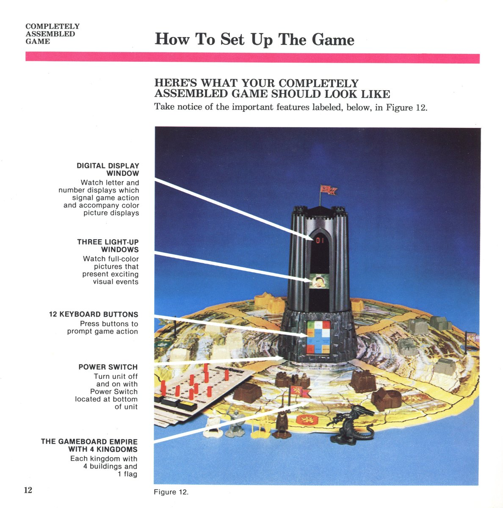

The Tower That Kept Its Secret in Plastic
Milton Bradley's 1981 Dark Tower hides its whole game in a rotating black tower you can see but not see into. Where the era's other secret-keeping computers hid state in electrons, this one keeps it in a visible, turning object — and the concealment is the interface.
Most of the secret-keeping machines in this museum hide their state in the same place: silicon. The Invicta Electronic Master Mind picks a number inside a 4-bit chip and answers in a vocabulary of four LEDs. Merlin hides a strategy in a TMS1000 and talks through eleven glowing keys. The D&D Computer Labyrinth conceals a whole dungeon in four bits of memory and dare not show it, choosing instead to beep at you while you draw the map. Whatever secret they hold lives in electrons, invisible and abstract to the point of philosophy.
Milton Bradley's Dark Tower (1981) did something stranger. It hid its secret in plastic — a black tower you could reach out and physically turn toward yourself. And it was honest about it. The concealment was not done invisibly inside a chip; it happened in front of you, as an object you could see perfectly well yet could not see into.

Here is the setup. In the middle of the playing board sits a black, windowed tower about the size of a fist on a small stand. It contains a TMS-1400 microcontroller — the descendant of the TMS-1000 that powered Merlin and the Little Professor — running the whole game. But the tower is not just a computer hidden in a box. It is a computer that has agreed to behave like a physical object with secrets: it swivels to face each player in turn, it wears a tinted plastic visor you cannot see through, and behind that gloom it rotates an internal carousel of backlit film cels to reveal events.
Play is a ritual of physically negotiating with this object. You face your enemies, enter rooms, and fight battles by spinning the tower toward you, pressing membrane buttons on its base, and watching the machine answer by rotating its inner drum until a backlit scene shows through the dark window — a horde of foes, a treasure, the dragon's chambers. The state of the game is never on a board, a screen, or a readout where you can just read it. It lives behind tinted plastic, and the only way to get it out is to turn a physical object and wait for it to decide what to show you.
This is the part I keep circling. The museum's other hidden-state machines keep secrets as information — patterns of electrons that you extract by asking the right question. Dark Tower makes the secret into a thing: a rotating drum inside a tower you can hold, driven by a carousel of actual printed celluloid scenes lit from behind. When the machine wants you to know the dragon is guarding the treasure, it physically rotates that drum until the right film is in the window and the backlight comes on. You do not receive the information; the tower performs it, one rotation at a time. The reveal has a body.
And with that single design decision, the game's interface becomes its whole atmosphere. Because the tower deliberately suppresses information — where the dragon sits, how the random walls fall, what lies in the sealed rooms — your choices are made against a darkness you can almost reach. You turn the iron key to open a room, and the tower holds its breath behind the tinted plastic before spinning to show you what was in there. Part of you is waiting to see whether it was gold or death.
The tower's design lineage is worth a detour. It was the work of Vince Erato, who had designed Big Trak — another object that took orders and carried them out on the living-room floor. Dark Tower is the darker sibling: where Big Trak put your program into the world, Dark Tower puts the computer's will into a physical shape you must negotiate with. The machine is no longer your tool or your playmate; it is a gatekeeper with its own rotating interior, and you play against it by turning it toward you and reading what it chooses to reveal. An Orson Welles television commercial sold it as an object of foreboding. It later became the subject of a landmark trade-secrets lawsuit. Of course it did — a throne-shaped hider of state is exactly the kind of thing someone feels entitled to.
Dark Tower is the museum's clearest machine-as-hidden-state adversary in physical form. Merlin hides one number and plays six games; the Invicta hides a code and grades guesses; the Labyrinth hides a maze and only beeps. Dark Tower is the only one of them that makes you reach toward the place the secret is kept, turn it to face you, and take what the rotating film gives you. Its hidden state is not just concealed — it is housed. In every other computer here, you cannot see inside because there is nothing to see but signal. Dark Tower is the one where you cannot see inside because the secret is a living thing with a body, and the body is the point.
Milton Bradley Dark Tower (1981). Image from the museum collection's local asset of the assembled board.